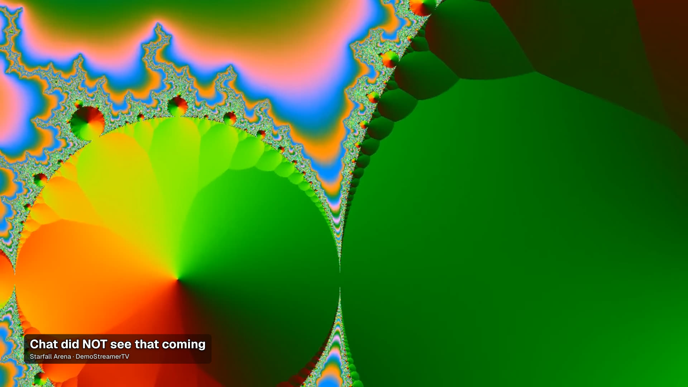

Turn your Twitch clips
into a highlight reel
Pick your clips in a web UI, download them via the official Twitch API, then either play them live in OBS — crossfades, autoplay, sound on — or render one MP4 to upload anywhere.
Log in & curate
Log in with Twitch once. Browse your clips, download the ones you want, hide the rest, and set your play order.
Download via the official API
Clips are pulled through Twitch's own Get Clips Download endpoint — no scraping, no client secret required.
Play it two ways
Open the live crossfade overlay as an OBS Browser Source, or render one loudness-normalized MP4 to upload.
What it does
Everything runs on your own machine — no hosted backend, no account but your own Twitch login.
Fine-grained curation
Search by title or game, hide clips you'll never feature, delete a stale download — all reversible, all separate actions.
Drag-and-drop ordering
Random, by views, most recent/oldest, or a fully custom order you set by dragging tiles in the reel panel.
Saved configurations
Save as many named reels as you like ("Highlights", "Fails"…) — each gets its own stable overlay URL.
Live, zero-refresh overlay
Editing a saved reel updates any open OBS source instantly over SSE — no Browser Source refresh, ever.
Loudness-normalized render
Prefer a fixed file? Render one MP4 with crossfade transitions and per-clip loudness normalization.
100% local, no lock-in
A Public Twitch app (no secret) plus Node.js. Your clips and configs never leave your machine.
See it in OBS
The overlay autoplays with sound the moment its Browser Source goes live, and crossfades cleanly between clips.
